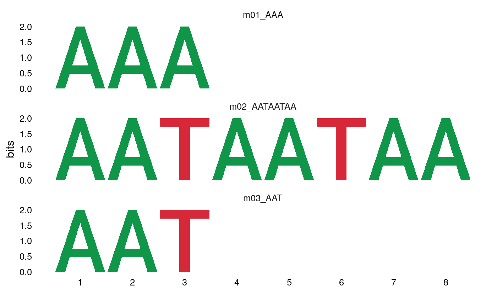
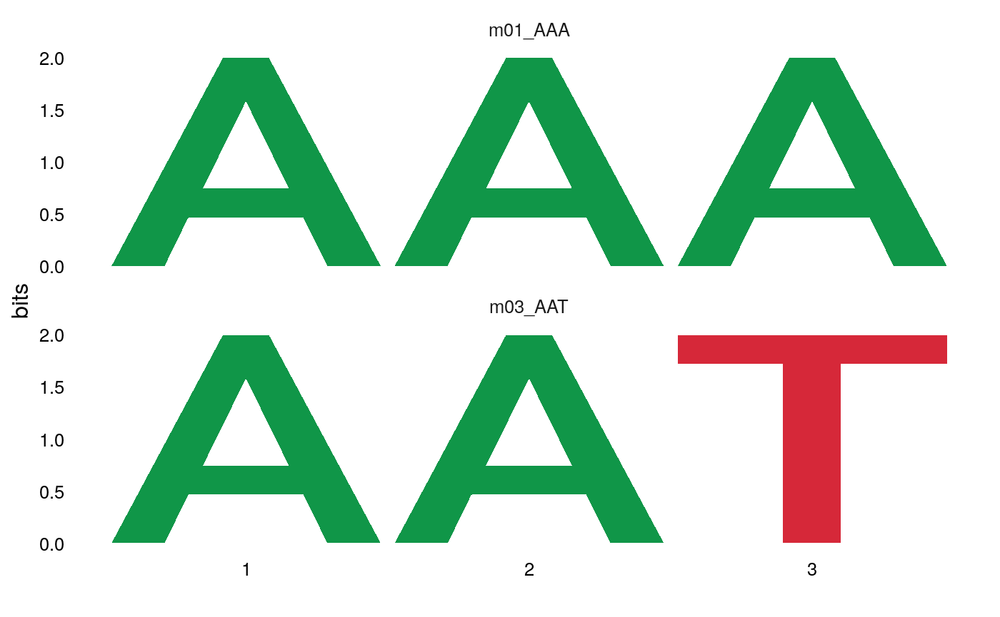

library(dremeR)
# Verify that dremeR detects your meme install # should return all green checks if so. check_meme_install() #> checking main install #> ✔ /nas/longleaf/home/snystrom/meme/bin #> checking util installs #> ✔ /nas/longleaf/home/snystrom/meme/bin/dreme #> ✔ /nas/longleaf/home/snystrom/meme/bin/ame #> ✔ /nas/longleaf/home/snystrom/meme/bin/fimo #> ✔ /nas/longleaf/home/snystrom/meme/bin/tomtom
fa <- system.file("extdata/fasta_ex/fa1.fa", package = "dremeR") dreme_out <- runDreme(fa, "shuffle", e = 39, outdir = tempdir()) #> Registered S3 method overwritten by 'treeio': #> method from #> root.phylo ape
dreme results are a data.frame. The motif column contains a universalmotif object with the PCM information for each de-novo discovered motif. This is so that any filtering of the results object also simply filter the available motifs.
dreme_out #> rank name altname seq length nsites positive_hits negative_hits #> 1 1 m01_AAA DREME-1 AAA 3 5 1 1 #> 2 2 m02_AATAATAA DREME-2 AATAATAA 8 10 1 0 #> 3 3 m03_AAT DREME-3 AAT 3 10 1 1 #> pvalue evalue unerased_evalue positive_total negative_total pos_frac neg_frac #> 1 1.0 39 39 1 1 1 1 #> 2 0.5 9 18 1 1 1 0 #> 3 1.0 12 12 1 1 1 1 #> motif #> 1 <S4 class 'universalmotif' [package "universalmotif"] with 20 slots> #> 2 <S4 class 'universalmotif' [package "universalmotif"] with 20 slots> #> 3 <S4 class 'universalmotif' [package "universalmotif"] with 20 slots>
The motif column can be used as input to all universalmotif functions.
library(universalmotif) view_motifs(dreme_out$motif)

The primary advantage of using the data.frame output allows simple integration with base subsetting, piping, and the tidyverse.
library(dplyr) #> #> Attaching package: 'dplyr' #> The following objects are masked from 'package:stats': #> #> filter, lag #> The following objects are masked from 'package:base': #> #> intersect, setdiff, setequal, union dreme_out %>% filter(length == 3) %>% # after filtering with dplyr, only motifs with length 3 will be plotted {universalmotif::view_motifs(.$motif)}

universalmotif manipulations can easily be executed on the motif column as well. For example:
dreme_out$motif %>% merge_motifs() %>% view_motifs()

Explanation of data output
- Editing features of motifs w/
update_motifs()andas_universalmotif - saving results as data.frame and .meme file
Importing previous data
importDremeXML() can be used to import a dreme.xml file from a previous run on the MEME server or on the commandline.
Saving data from DREME Web Server
To download XML data from the MEME Server, right-click the DREME XML output link and “Save Target As” or “Save Link As” (see example image below), and save as <filename>.xml. This file can be read using importDremeXML()